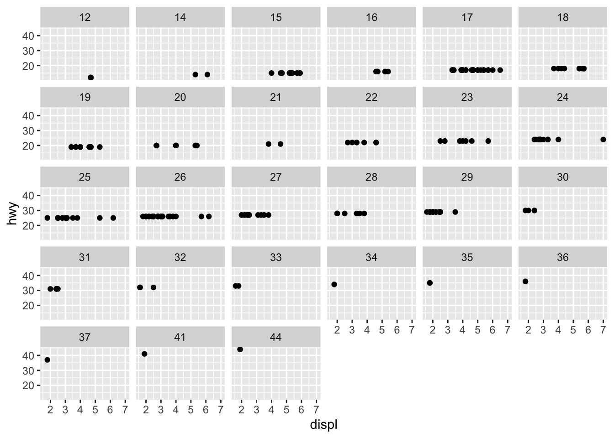
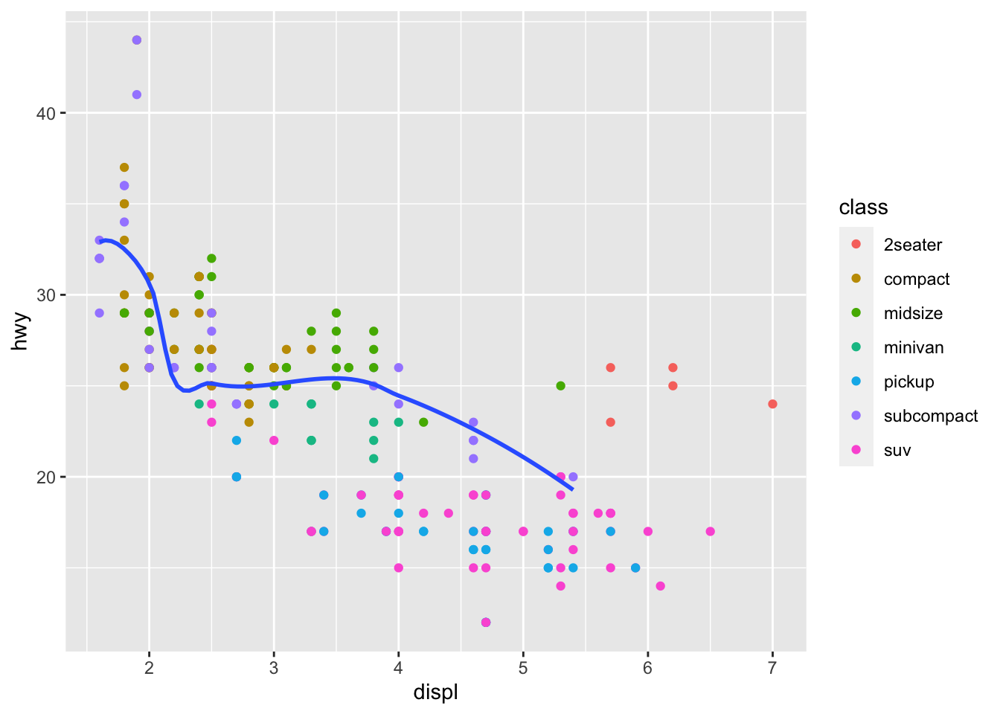

knitr::opts_chunk$set(warning = FALSE, message = FALSE) These are examples and exercises from Chapter 3 of R for Data Science, by Hadley Wickham and Garret Grolemund.

1. Set Up
This first chunk will remove warning messages from all chunks in this file. To hide this chunk use include=FALSE within the {} brackets.
This second chunk calls two packages:
tidyverse: to tidy data and create visuals with ggplot2.
gridExtra: to arrange data in a grid
library(tidyverse)
library(gridExtra)This chapter analyzes the mpg data so I’m using the head() function from utils to view the first five rows in the mpg data set.
utils::head(mpg, 5)# A tibble: 5 × 11
manufacturer model displ year cyl trans drv cty hwy fl class
<chr> <chr> <dbl> <int> <int> <chr> <chr> <int> <int> <chr> <chr>
1 audi a4 1.8 1999 4 auto(l5) f 18 29 p compa…
2 audi a4 1.8 1999 4 manual(m5) f 21 29 p compa…
3 audi a4 2 2008 4 manual(m6) f 20 31 p compa…
4 audi a4 2 2008 4 auto(av) f 21 30 p compa…
5 audi a4 2.8 1999 6 auto(l5) f 16 26 p compa…2. Visuals
\(\underline{\text{Question 1}}\): Do cars with big engines use more fuel than cars with small engines?
To answer this question I will focus on two columns:
displ : a cars engine size in litres
hwy : a car’s fuel efficiency on the highway in mpg.
ggplot2::ggplot(data = mpg) +
ggplot2::geom_point(mapping = ggplot2::aes(x = displ, y = hwy))
Note:
There is a negative relation between engine size and fuel efficiency.
The mapping argument is always paired with aes(), and the x and y arguments of aes() specify which variables to map to the x and y axes.
3. 3.2.4 Exercises
- The following code chunk creates an empty square.
ggplot2::ggplot(data = mpg)
The mpg data set has 234 rows and 11 columns.
The drv variable is the type of drive the car has such as f = front wheel, r = rear wheel, and 4 = 4 wheel drive.
The following plot shows hwy vs. cyl.
ggplot2::ggplot(mpg) +
ggplot2::geom_point(ggplot2::aes(x = cyl, y = hwy))Note: This isn’t very useful because it is obvious that as the number of cylinders increases the miles per gallon decreases.
- The following plot shows class vs. drv.
ggplot2::ggplot(mpg) +
ggplot2::geom_point(ggplot2::aes(x = drv, y = class))Note: This plot isn’t useful because there are no obvious trends. Categorical variables usually have a small number of values they are limited to, so it only seems like there are 12 observed values.
4. Aesthetics
Within the aes() function when specifying that color is equal to a column variable then ggplot will add a color key to these variables, as shown below.
ggplot2::ggplot(data = mpg) +
ggplot2::geom_point(mapping = ggplot2::aes(x = displ, y = hwy, color = class))
When defining color outside aes() then color is equal to a specific color (such as red or blue), and ggplot will make all points that one color, as shown below.
ggplot2::ggplot(data = mpg) +
ggplot2::geom_point(mapping = ggplot2::aes(x = displ, y = hwy), color = "blue")
size:
ggplot2::ggplot(data = mpg) +
ggplot2::geom_point(mapping = ggplot2::aes(x = displ, y = hwy, size = class))
(Warning: using size for a discrete variable is not advised.)
alpha: (transparency)
ggplot2::ggplot(data = mpg) +
ggplot2::geom_point(mapping = ggplot2::aes(x = displ, y = hwy, alpha = class))
shape:
ggplot2::ggplot(data = mpg) +
ggplot2::geom_point(mapping = ggplot2::aes(x = displ, y = hwy, shape = class))

5. 3.3.1 Exercises
- The following code is incorrect because color is inside aes(), which is labeling all the points as “blue”.
ggplot2::ggplot(data = mpg) +
ggplot2::geom_point(mapping = ggplot2::aes(x = displ, y = hwy, color = "blue"))
- Categorical : manufacturer, model name, trans, drv, fl, and class
Continuous : displ, cty, year of manufacture, number of cylinders, and hwy
- Notice in the printed data frame the categorical variables are usually character
values, where continuous variables are numeric values such as or .
- When mapping a continuous variable to an aes() such as color then then there the key also becomes continuos as shown below.
# Categorical
ggplot2::ggplot(data = mpg) +
ggplot2::geom_point(mapping = ggplot2::aes(x = displ, y = manufacturer, color = trans))# Continuous
ggplot2::ggplot(data = mpg) +
ggplot2::geom_point(mapping = ggplot2::aes(x = displ, y = manufacturer, color = hwy))- When mapping the same variable to multiple aesthetics then multiple keys are added as shown below.
ggplot2::ggplot(data = mpg) +
ggplot2::geom_point(mapping = ggplot2::aes(x = displ, y = hwy, size = hwy, color = displ))- Stroke adjusts the thickness of the boarder (for shapes 21-25) as shown below.
ggplot2::ggplot(mtcars, ggplot2::aes(wt, mpg)) +
ggplot2::geom_point(shape = 21, colour = "black", fill = "pink", size = 5, stroke = 5)- When defining something like color to be displ < 5, it sets up a true or false argument for this, and applies one color (blue) to true values less than 5 and red for false values greater than 5.
ggplot2::ggplot(data = mpg) +
ggplot2::geom_point(mapping = ggplot2::aes(x = displ, y = hwy, color = displ < 5))
6. Facets
facet_wrap() should be used for discrete values as shown below:
ggplot(data = mpg) +
geom_point(mapping = aes(x = displ, y = hwy)) +
facet_wrap(~ class, nrow = 2)
To facet on a combination of variables use facet_grid() as shown below:
ggplot(data = mpg) +
geom_point(mapping = aes(x = displ, y = hwy)) +
facet_grid(drv ~ cyl)
Use + facet_grid(.~cyl) to not facet rows.
ggplot(data = mpg) +
geom_point(mapping = aes(x = displ, y = hwy)) +
facet_grid(.~ cyl)
7. 3.5.1 Exercises
- When you facet a continuous variable you make A LOT of graphs.
ggplot(data = mpg) +
geom_point(mapping = aes(x = displ, y = hwy)) +
facet_wrap(~ hwy)
- The empty cells in the
facet_grid(drv ~ cyl)plot above are showing the empty points in the graph below. For example cars with four wheel drive only have an even number of cylinders so the plot of 4 wheel drive with 5 cylinders is empty because it does not exist.
ggplot(data = mpg) +
geom_point(mapping = aes(x = drv, y = cyl))
- One of the below plots is shown in rows and the other in columns. The period says not to facet the rows or the columns.
# rows
ggplot(data = mpg) +
geom_point(mapping = aes(x = displ, y = hwy)) +
facet_grid(drv ~ .)
#columns
ggplot(data = mpg) +
geom_point(mapping = aes(x = displ, y = hwy)) +
facet_grid(. ~ cyl)
- The advantages of facet wrap allow for data with various classes or types to be analyzed by such. Additionally it’s difficult for humans to visualize a large amount of color so it is easier to digest the variety of date spread out.
The disadvantage of this could be that spreading the data out would make it difficult to compare observations between different categories.
ggplot(data = mpg) +
geom_point(mapping = aes(x = displ, y = hwy)) +
facet_wrap(~ class, nrow = 2)
nrow and ncol define the number of rows and columns in the facet wrap.There is also scales, shrink, labeler, as.table, switch, drop, dir, and stip.position. Facet grid doesn’t have these because it is specified in the function instead.
Variables with more unique levels should be in columns when using facet_grid() because there is more space for columns if the plot is laid out horizontally.
8. Geometric Objects
The side by side graphs below show the same data. The left graph uses the geometric object geom_point() which shows all the points, and the right graphs uses geom_smooth() which creates a best fit line with the data’s standard error without all the data points.
# left graph: geom_point()
a <- ggplot(data = mpg) +
geom_point(mapping = aes(x = displ, y = hwy))
# right graph: geom_smooth()
b <- ggplot(data = mpg) +
geom_smooth(mapping = aes(x = displ, y = hwy))
# both together
grid.arrange(a,b, nrow = 1)For different line “shapes” geom_smooth() can be used with different linetypes within aes() as shown below.
ggplot(data = mpg) +
geom_smooth(mapping = aes(x = displ, y = hwy, linetype = drv))
For the following geoms, you can set the group aesthetic to a categorical variable to draw multiple objects.
c <- ggplot(data = mpg) +
geom_smooth(mapping = aes(x = displ, y = hwy))
d <- ggplot(data = mpg) +
geom_smooth(mapping = aes(x = displ, y = hwy, group = drv))
e <- ggplot(data = mpg) +
geom_smooth(
mapping = aes(x = displ, y = hwy, color = drv),
show.legend = FALSE)
grid.arrange(c,d,e, nrow = 1)
Below multiple geometric objects are added to one plot.
ggplot(data = mpg) +
geom_point(mapping = aes(x = displ, y = hwy)) +
geom_smooth(mapping = aes(x = displ, y = hwy))
Defining the mapping aes() helps reduce repetion, as shown below.
ggplot(data = mpg, mapping = aes(x = displ, y = hwy)) +
geom_point() +
geom_smooth()
Global Mapping
ggplot(data = mpg, mapping = aes(x = displ, y = hwy)) +
geom_point(mapping = aes(color = class)) +
geom_smooth()
Subcompact (subset) mapping
ggplot(data = mpg, mapping = aes(x = displ, y = hwy)) +
geom_point(mapping = aes(color = class)) +
geom_smooth(data = filter(mpg, class == "subcompact"), se = FALSE)
9. 3.6.1 Exercises
line chart:
geom_line()
boxplot:geom_boxplot()
histogram:geom_histogram()
area chart:geom_area()Prediction: the below code will show the various points and lines for drv without any standard error.
ggplot(data = mpg, mapping = aes(x = displ, y = hwy, color = drv)) +
geom_point() +
geom_smooth(se = FALSE)
- show.legend = FALSE hides the legend box, and was used earlier in this chapter because it changes the size of the graphs, which would make it more difficult to compare to the other graphs.